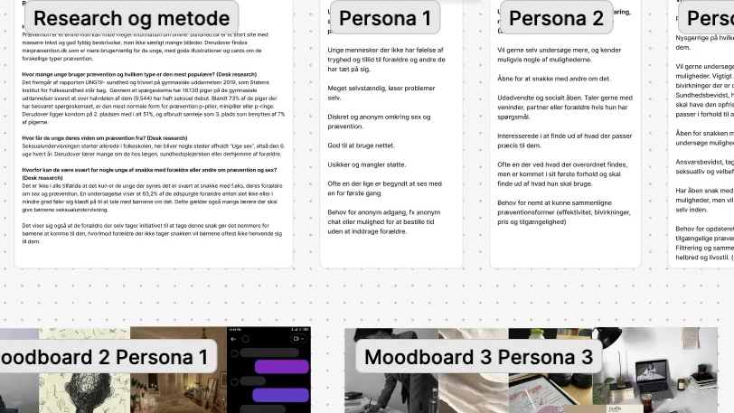
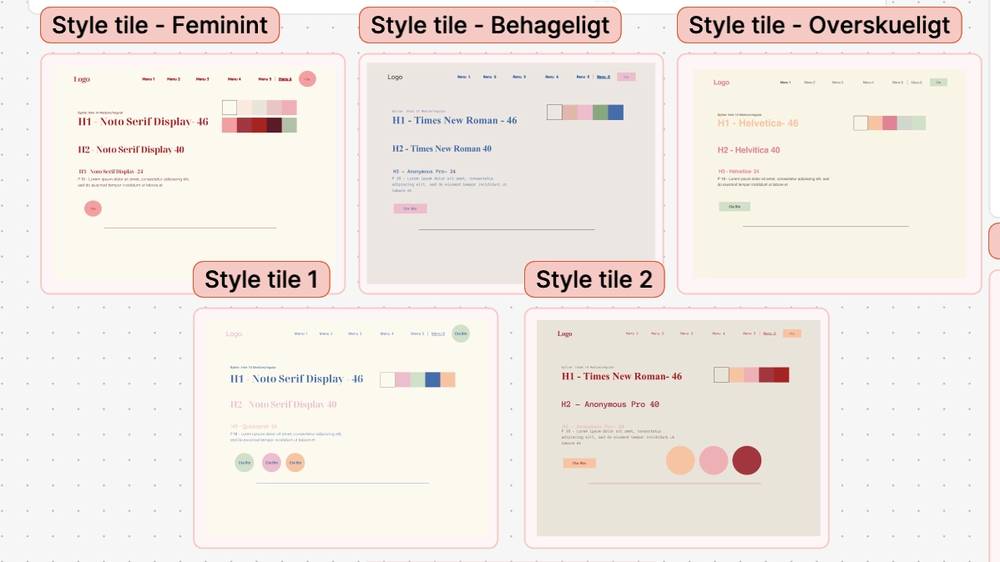
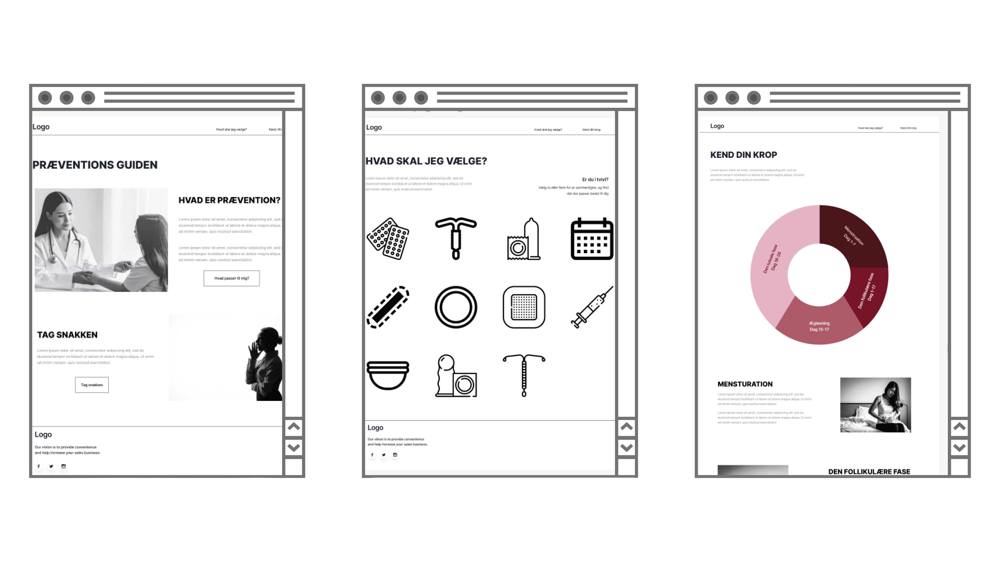
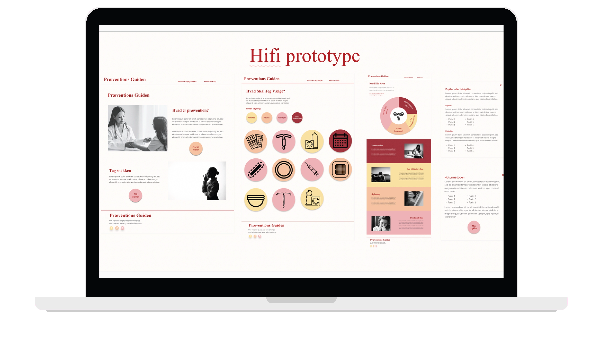
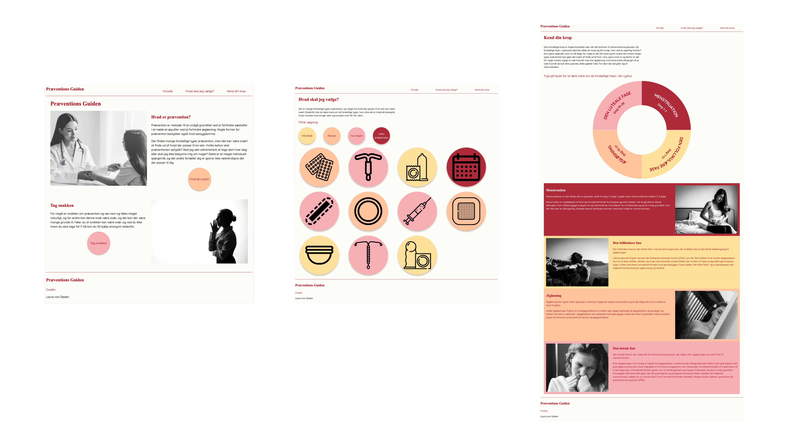

GRUNDLÆGGENDE UX/UI
EMNESITE
I temaet Grundlæggende UX/UI arbejdede vi med udviklingen af et emnesite fra idé til færdigt produkt. Med udgangspunkt i en brainstorm skulle vi finde frem til et relevant emne, som efterfølgende blev videreudviklet gennem research, analyse og design. I processen arbejdede vi blandt andet med research af emnet, målgruppeanalyse, bruger- og behovsforståelse samt udarbejdelse af brugertyper. Derudover skulle vi definere værdiord, som skulle afspejles i sitets visuelle udtryk, finde relevant indhold i form af tekst og billeder samt udarbejde skitser og prototyper frem mod den endelige løsning. Afslutningsvis skulle sitet kodes, valideres og præsenteres.
SE→IDEGENERERING
Valget af emne tog udgangspunkt i en brainstorm, som førte frem til emnet Prævention. Under brainstormen udviklede jeg flere idéer baseret på et identificeret problem, nemlig at mange unge kan have svært ved at tale med andre om prævention. Med dette udgangspunkt arbejdede jeg med overvejelser om, hvordan man kan gøre det lettere for unge at få viden om prævention og skabe trygge rammer for at søge information og hjælp.
RESEARCH
Herefter påbegyndte jeg den indledende researchfase. Jeg undersøgte blandt andet websites som Sex & Samfund og NetDoktor for at få indsigt i, hvordan eksisterende sider med lignende formål er opbygget. Fokus var på, hvor brugere typisk finder viden om prævention, hvilke præventionsformer der er mest udbredte, samt hvilke barrierer der kan gøre det svært for unge at tale åbent om emnet.
På baggrund af researchen arbejdede jeg videre med målgruppeanalyse og identificerede den primære målgruppe som unge, der oplever usikkerhed eller ubehag ved at tale med andre om prævention. Derudover identificerede jeg to sekundære målgrupper: unge piger, der gerne vil lære mere og udveksle erfaringer, samt voksne kvinder, der ønsker at genopfriske deres viden om prævention.
Efterfølgende udarbejdede jeg personaer, der repræsenterede de identificerede målgrupper, og analyserede deres behov i relation til sitet. Her blev det tydeligt, at der var behov for anonym adgang, eventuelt i form af en anonym chat, mulighed for at sammenligne forskellige præventionstyper, en overskuelig præsentation af præventionsformer samt en filtreringsfunktion baseret på alder, helbred og livsstil. Derudover blev en favoritfunktion også overvejet. Jeg valgte at fokusere på udvalgte funktioner, herunder en oversigt over præventionstyper, adgang til chat via Sex & Samfund samt en filtreringsfunktion.
SE→ STIL
Som en del af researchprocessen udarbejdede jeg flere moodboards med udgangspunkt i personaerne samt de tre værdiord, som jeg vurderede var centrale for sitets udtryk. De tre værdiord blev feminint, behageligt og overskueligt. På baggrund af disse udviklede jeg moodboards, der understøttede den ønskede stil, og udarbejdede efterfølgende to style tiles, som begge tog afsæt i værdiordene.
For at vurdere hvilken stil der bedst matchede værdiordene, gennemførte jeg en Likert-test. Testresultaterne viste, at ingen af de to style tiles ramte værdiordene helt præcist. På den baggrund valgte jeg at starte forfra, og med sparring og feedback fra mine klassekammerater udarbejdede jeg et nyt style tile, som i højere grad afspejlede de ønskede værdier. Dette style tile blev valgt som grundlag for det videre designarbejde.
SE→ PROTOTYPER
Efter research og valg af stil begyndte jeg arbejdet med de første skitser i form af en solution sketch. Disse blev præsenteret i klassen som en del af et sketch museum, hvor jeg modtog konstruktiv feedback og forslag til forbedringer. Feedbacken gav anledning til mindre justeringer og forbedringer af idéen.
Herefter udarbejdede jeg en Lo-fi prototype. Denne blev testet af en veninde ved hjælp af en tænke-højt-test, hvor jeg observerede brugerens interaktion med prototypen. Testen viste blandt andet mangler i form af en forvirrende CTA-knap samt manglende tekst på cyklushjulet, hvilket gjorde det uklart, at elementet var klikbart.
Efter at have foretaget de nødvendige justeringer gik jeg videre til udviklingen af Hi-fi prototypen. Parallelt med prototypearbejdet arbejdede jeg også med indholdsudvikling, herunder tekst og billedvalg. Jeg valgte at anvende sort/hvid-billeder, da de skabte balance i forhold til sitets farverige visuelle udtryk. Derudover fandt jeg ikoner, der repræsenterede de forskellige præventionstyper, som kunne anvendes på infosiden om præventionstyper.
Da alt indhold var på plads, blev det implementeret i Hi-fi prototypen sammen med farver, fonte, størrelser og knapper. På undersiden “Hvad skal jeg vælge?” arbejdede jeg bevidst med Gestaltloven om lighed for at skabe overblik på en side med mange informationer. Dette blev gjort ved at placere filtreringscirklerne ensartet og gøre dem mindre end præventionstyperne samt ved at matche farverne på filtreringsmulighederne med de relevante præventionstyper.
SE→ KODNING
Herefter påbegyndte jeg kodningsfasen. Med udgangspunkt i den færdige Hi-fi prototype udarbejdede jeg wireframes til både mobil og desktop, hvilket bidrog til en mere struktureret og overskuelig kodningsproces.
Kodningen startede med opsætning af mappestruktur, herunder HTML-filer, CSS-mapper samt en billedmappe med billeder i WebP-format og SVG-filer. Herefter opsatte jeg HTML-strukturen og linkede til de relevante stylesheets.
Da kodningen var færdig, blev både HTML og CSS valideret for at sikre korrekt struktur og kodekvalitet. Derudover blev sitet testet med Lighthouse, hvor resultaterne viste, at næsten alle sider opnåede høje scores inden for performance, accessibility, best practices og SEO.
PRÆSENTATION
Efter færdiggørelsen af sitet præsenterede vi både proces og færdigt produkt for hinanden. Præsentationen havde en varighed på 7 minutter, hvor fokus var på at formidle de vigtigste dele af processen samt begrunde de valg, der var truffet undervejs. Formålet var at føre lytterne gennem hele processen og sikre en klar forståelse for, hvordan det endelige resultat var blevet til.
SE→ DET ENDELIGE RESULTAT
Det færdige website blev opbygget med tre primære undersider: Forside, Hvad skal jeg vælge? og Kend din krop. Struktureringen af sitet blev valgt for at skabe en logisk og overskuelig brugeroplevelse, hvor brugeren guides fra introduktion til fordybelse.
SE→ FORSIDE
Forsiden indeholdt en kort introducerende tekst om prævention med det formål at skabe kontekst og tryghed for brugeren. Derudover indeholdt siden et afsnit med overskriften “Tag snakken”, som var ledsaget af en CTA-knap. CTA’en fungerede som et videre link til Sex & Samfund, hvor brugeren kunne få yderligere information og rådgivning om prævention.
HVAD SKAL JEG VÆLGE?
Siden Hvad skal jeg vælge? bestod af en kort tekst, der introducerede overvejelser i forbindelse med valg af prævention. Hertil var der opstillet fire filtreringsmuligheder, som i den kodede løsning ikke var funktionelle, men som fungerede i prototypen. Derudover præsenterede siden 11 forskellige præventionsformer, hvoraf de første fire kunne udfoldes ved hjælp af en details-sektion med tilhørende forklarende tekst om den enkelte præventionstype.
KEND DIN KROP
Siden Kend din krop havde til formål at give brugeren en bedre forståelse for kroppens menstruations cyklus og de fysiske forandringer, der sker i de forskellige faser. Øverst på siden var der placeret et klikbart cyklushjul, som fungerede som navigation og førte brugeren ned til den relevante tekst på siden. Denne funktion blev samtidig koblet til præventionsformen Naturmetoden, som ikke anvender prævention i traditionel forstand, men i stedet baserer sig på viden om og forståelse af egen cyklus.